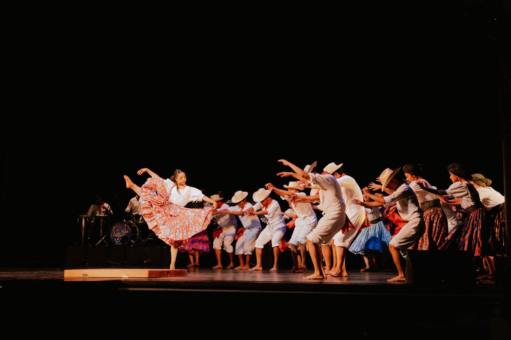
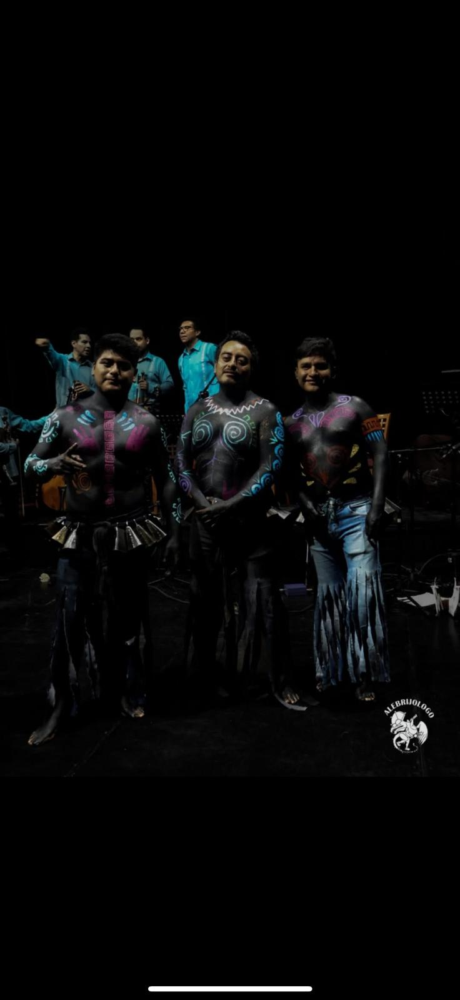
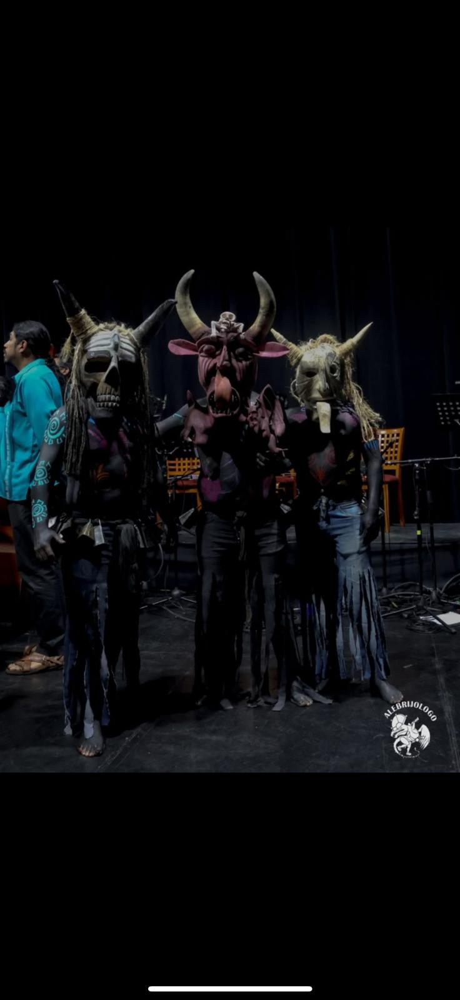
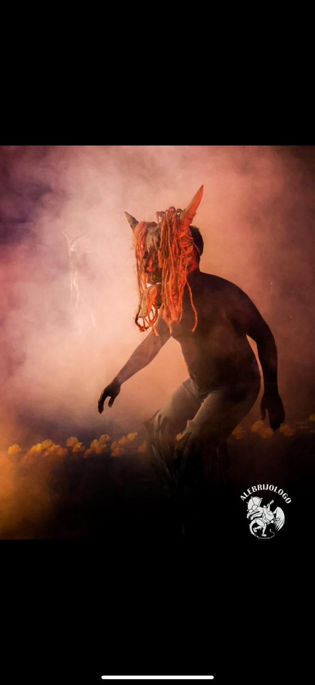

Descubre a las agrupaciones y academias que enriquecen la experiencia cultural de Oaxaca Vive, promoviendo el arte, la música y las tradiciones de nuestro estado.
Agrupación independiente que ha producido más de 100 montajes, llevando el teatro oaxaqueño a las ocho regiones del estado y festivales internacionales. Su trabajo diversifica temáticas y estilos, acercándose a diferentes audiencias y promoviendo la profesionalización de sus integrantes.


Oaxaca Vive Ballet es una agrupación multidisciplinaria de jóvenes bailarines, maestros danzantes y bailadores tradicionales del estado de Oaxaca. Fundado en 2022 por la Dra. Margarita Machado Casas y dirigido por el Lic. Jhovanny Alberto Aguilar Celaya, el ballet busca difundir y preservar el acervo cultural del estado, honrando la tradición y los pueblos originarios.
Con más de 100 integrantes provenientes de todo Oaxaca, el ballet ha representado a México en diversas ciudades de la unión americana. Su concepto de comunalidad permite que las clases, viajes e indumentaria sean completamente gratuitos, convirtiéndose en una plataforma que impulsa la cultura oaxaqueña hacia intercambios globales.



Espacio dedicado a la creación de figuras artesanales que representan la riqueza cultural de Oaxaca. Cada pieza fusiona creatividad y tradición, preservando este arte ancestral.



Fundada por el Tenor Internacional Luis Adrián Cruz Ramos, esta academia lleva más de 12 años formando artistas en diferentes géneros del canto. Con niveles educativos desde principiante hasta profesional, celebra recitales y conciertos anuales, dejando huella en cada uno de sus alumnos.